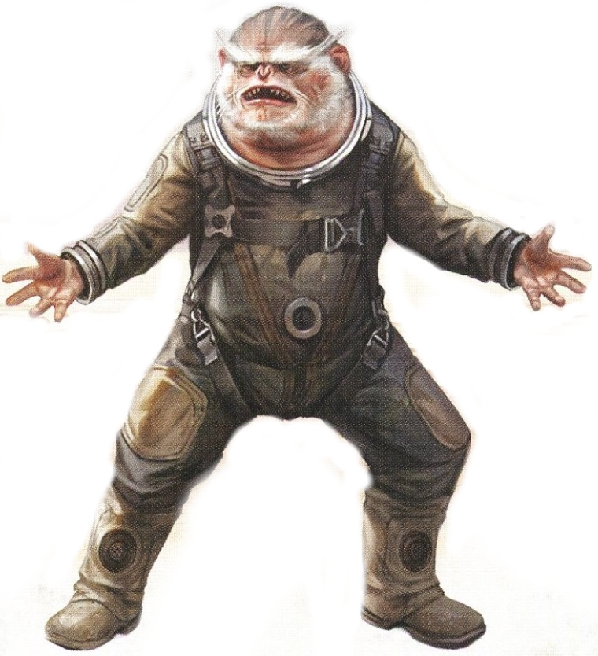

<!DOCTYPE html>
<html>

<head>
  <title>Iakaru</title>

  <meta charset="utf-8">
  <meta name="viewport" content="width=device-width, initial-scale=1, shrink-to-fit=no">

  <link rel="stylesheet" href="https://stackpath.bootstrapcdn.com/bootstrap/4.1.3/css/bootstrap.min.css" integrity="sha384-MCw98/SFnGE8fJT3GXwEOngsV7Zt27NXFoaoApmYm81iuXoPkFOJwJ8ERdknLPMO"
    crossorigin="anonymous">
  <link rel="stylesheet" href="https://pro.fontawesome.com/releases/v5.5.0/css/all.css" integrity="sha384-j8y0ITrvFafF4EkV1mPW0BKm6dp3c+J9Fky22Man50Ofxo2wNe5pT1oZejDH9/Dt"
    crossorigin="anonymous">
  <link rel="stylesheet" type="text/css" href="style.css">
</head>

<body>

    <div class="text-uppercase">
        <nav aria-label="breadcrumb" class="breadcrumb-bar fixed-top">
          <ol class="breadcrumb">
            <a class="navbar-brand" href="../index.html">
              <span class="nav-logo">Star Wars Tabletop Compendium</span>
            </a>
            <div class="row breadcrumb-whole">
              <li class="breadcrumb-item"><a class="" href="../index.html">Home</a></li>
              <li class="breadcrumb-item"><a class="" href="species_index.html">Species</a></li>
              <li class="breadcrumb-item active">Iakaru</li>
            </div>
          </ol>
        </nav>
      </div>

  <br>
  <div class="Container" id="main_box">

    <a href="species_index.html"><button type="button" class="btn btn-outline-dark" id="back_button">&#9668; Back</button></a>

    <h1>Iakaru</h1>
    <h5 class="aurebesh_under">iakaru</h5>

    
    <br>

    <div class="container col-8">

      <div class="card">
        <div class="card-header" id="headingOne">
          <h5 class="mb-0">
            <button class="btn btn-link btn-block" type="button" data-toggle="collapse" data-target="#collapseZero" aria-expanded="false"
              aria-controls="collapseZero" style="color: white; text-decoration: none; text-align: left">
              Stats
            </button>
          </h5>
        </div>
        <div id="collapseZero" class="collapse" aria-labelledby="headingZero">
          <div class="card-body">
            <div class="row justify-content-md-center">
              <div class="col col-lg-2 align" align="center">
                <strong>Bra</strong>
              </div>
              <div class="col col-lg-2" align="center">
                <strong>Agi</strong>
              </div>
              <div class="col col-lg-2" align="center">
                <strong>Int</strong>
              </div>
              <div class="col col-lg-2" align="center">
                <strong>Cun</strong>
              </div>
              <div class="col col-lg-2" align="center">
                <strong>Will</strong>
              </div>
              <div class="col col-lg-2" align="center">
                <strong>Pre</strong>
              </div>
            </div>
            <div class="row justify-content-md-center">
              <div class="col col-lg-2" align="center">
                2
              </div>
              <div class="col col-lg-2" align="center">
                3
              </div>
              <div class="col col-lg-2" align="center">
                2
              </div>
              <div class="col col-lg-2" align="center">
                2
              </div>
              <div class="col col-lg-2" align="center">
                1
              </div>
              <div class="col col-lg-2" align="center">
                2
              </div>
            </div>
            <br>
            <div class="row justify-content-md-center">
              <div class="col col-lg-6">
                <b>Wound Threshold: </b>9 + Brawn
              </div>
            </div>
            <div class="row justify-content-md-center">
              <div class="col col-lg-6">
                <b>Strain Threshold: </b>10 + Willpower
              </div>
            </div>
            <div class="row justify-content-md-center">
              <div class="col col-lg-6">
                <b>Starting Experience: </b>100 XP
              </div>
            </div>
            <div class="row justify-content-md-center">
              <div class="col col-lg-6">
                <p><b>Special Abilities: </b>lakaru begin the game with one rank in <u>Piloting (Space)</u>. They still may
                  not train Piloting (Space) above rank 2 during character creation.</p>
              </div>
            </div>
            <div class="row justify-content-md-center">
              <div class="col col-lg-6">
                <p><b>Brachiation: </b>lakaru suffer no terrain penalties to movement through jungles or similar environments.
                  They also add <span style="color: lightblue;"><i
                    class="fas fa-square"></i></span> to Athletics and Coordination checks related
                  to climbing, swinging, and balancing.
                </p>
              </div>
            </div>
          </div>
        </div>
      </div>

    </div>
    <br>
    <p>The heavy-browed, simian <b>lakaru</b> are a rare sight in the galaxy, as their species never developed hyperdrive
      technology, and relatively few ventured offworld until recent years. Most still live in the rain forest canopies of
      lakar as they have for thousands of years. However, the invasive presence of pharmaceutical corporations (and, more
      recently, the Empire) has driven many lakaru deeper into the jungles, or even offworld. It is possible that lakaru
      may become a more common presence throughout the galaxy as more escape the continued despoiling of their homeworld.</p>
    <br>
    <div class="accordion" id="accordionExample">

      <div class="card">
        <div class="card-header" id="headingOne">
          <h5 class="mb-0">
            <button class="btn btn-link btn-block" type="button" data-toggle="collapse" data-target="#collapseOne" aria-expanded="false"
              aria-controls="collapseOne" style="color: white; text-decoration: none; text-align: left">
              Physiology
            </button>
          </h5>
        </div>
        <div id="collapseOne" class="collapse" aria-labelledby="headingOne">
          <div class="card-body">
            <p>Covered in coarse, dark fur with lighter, softer patches around their face and belly, lakaru are constantly
              grooming themselves. Long, bushy eyebrows protect their two dark eyes and provide lakaru with an instinctive
              sense of a number of environmental factors, including relative movement, wind speed, and even atmospheric pressure.
              An incredible sure-footed agility, tuned by millennia of gauging death-defying leaps and swings through the
              dense jungles of lakar, complements their keen spatial awareness. Their grip is extremely strong, evolved to
              brachiate through the rain forest’s branches and vines.</p>
          </div>
        </div>
      </div>

      <div class="card">
        <div class="card-header" id="headingTwo">
          <h5 class="mb-0">
            <button class="btn btn-link btn-block" type="button" data-toggle="collapse" data-target="#collapseTwo" aria-expanded="false"
              aria-controls="collapseTwo" style="color: white; text-decoration: none; text-align: left">
              Society
            </button>
          </h5>
        </div>
        <div id="collapseTwo" class="collapse" aria-labelledby="headingTwo">
          <div class="card-body">
            <p>The lakaru organize into tree-clans of fifteen to one hundred members each, led by the eldest females. They
              usually occupy the top fifty meters of jungle canopy, spending their time in a single home-tree and a few surrounding
              territory trees. The often-aggressive males occupy outer and lower branches, acting as sentries for females
              and children in the higher branches and closer to the trunk. Most males remain in the same tree-clan their
              entire lives, while females often join new clans when they come of age. lakaru seldom venture to the forest
              floor, but they do wander to other trees within their territory. Boundary disputes with neighboring tree-clans
              have led to feudal conflicts, particularly during times of food scarcity.</p>
            <p>In lakaru culture, everything belongs to the tree-clan, which stores its assets in various cubbyholes along
              the main trunk. Food is the only exception, and anthropologists often describe lakaru communal dining as akin
              to a Corellian bar brawl, except more energetic, lakaru agriculture focuses on fruit-bearing vines grown above
              the canopy and insect farming in designated trunks near the home-tree.</p>
            <p>Tree-clans near mountains have access to metals and originate most lakaru technology, which is unique, if
              obsolete by galactic standards, lakaru are limited to solar energy, for which they have little storage capacity.
              Nevertheless, they have developed repulsorlift technology, which they use to expand workspaces along branches
              and to stretch fruit vines above the canopy during the daytime.</p>
            <p>While early experiences with offworlders have left most lakaru apprehensive, some of them engage in trade
              or act as guides. The influx of offworld technology has been a boon to lakaru society, helping their civilization
              leap forward in recent decades. However, the coming of the Empire has brought with it mass deforestation, displacement,
              massacres, and more.</p>
          </div>
        </div>
      </div>

      <div class="card">
        <div class="card-header" id="headingThree">
          <h5 class="mb-0">
            <button class="btn btn-link btn-block" type="button" data-toggle="collapse" data-target="#collapseThree" aria-expanded="false"
              aria-controls="collapseThree" style="color: white; text-decoration: none; text-align: left">
              Homeworld
            </button>
          </h5>
        </div>
        <div id="collapseThree" class="collapse" aria-labelledby="headingThree">
          <div class="card-body">
            <p><b>lakar</b> is a lush, green Outer Rim planet not far from the Derilyn system in the Elrood sector. Vast
              continen￾tal rain forests ring lakar’s equatorial latitudes, flanked by oceans and ice caps at the poles. The
              jungle, dense with kilometer-high trees, is interrupted by the occasional mountain range. The vertical ecosystem
              here has enabled the lakaru to dominate their world in the canopy. There, they dine on fruits, seeds, and insects,
              which they share with a number of avian species. Below the canopy, rodents and insects feed on lakaru waste
              while avoiding predatory felines and giant ambush spiders.</p>
          </div>
        </div>
      </div>
      <div class="card">
        <div class="card-header" id="headingFour">
          <h5 class="mb-0">
            <button class="btn btn-link btn-block" type="button" data-toggle="collapse" data-target="#collapseFour" aria-expanded="false"
              aria-controls="collapseFour" style="color: white; text-decoration: none; text-align: left">
              Language
            </button>
          </h5>
        </div>
        <div id="collapseFour" class="collapse" aria-labelledby="headingFour">
          <div class="card-body">
            <p>lakaru communicate using a variety of sounds, but most of their complex ideas utilize a rapid stream of chittering
              and jabbering noises. They bark and screech when arguing over food or being threatened, and they make long,
              howling calls if they are away from home at night, lakaru can learn and speak Basic, but their accent is heavy;
              most teach non-native friends to understand lakari or suggest that they utilize a protocol droid.</p>
          </div>
        </div>
      </div>
      <div class="card">
        <div class="card-header" id="headingFive">
          <h5 class="mb-0">
            <button class="btn btn-link btn-block" type="button" data-toggle="collapse" data-target="#collapseFive" aria-expanded="false"
              aria-controls="collapseFive" style="color: white; text-decoration: none; text-align: left">
              Life under the Empire
            </button>
          </h5>
        </div>
        <div id="collapseFive" class="collapse" aria-labelledby="headingFive">
          <div class="card-body">
            <p>After escaping lakar, most lakaru fall in with smugglers, mercenaries, or pirates, but some join the growing
              resistance against the Empire. Their outstanding spatial awareness makes them strong pilots and expert gunners
              with anything from a sling to a shipboard turret. Those who have abandoned hope for a free lakar also often
              find their way to swoop or Podracing circuits.</p>
          </div>
        </div>
      </div>
      <div class="card">
        <div class="card-header" id="headingSix">
          <h5 class="mb-0">
            <button class="btn btn-link btn-block" type="button" data-toggle="collapse" data-target="#collapseSix" aria-expanded="false"
              aria-controls="collapseSix" style="color: white; text-decoration: none; text-align: left">
              Corporate Collusion
            </button>
          </h5>
        </div>
        <div id="collapseSix" class="collapse" aria-labelledby="headingSix">
          <div class="card-body">
            <p>The lakaru lived in relative peace for most of their history, excepting minor conflicts between ambitious
              tree-clans. That changed during the Clone Wars, when Degan Explorations scouted the lakar system and discovered
              unique chemical compounds suitable for bacta replication and other high-value processes on lakar. Parent company
              Chiewab set up a research lab, but competitors Fabreth Medical and the nearby Merisee Prime intercepted confidential
              transmissions and rushed to establish their own facilities, lakaru defended their homes and forests, but corporate
              security often massacred or forcibly relocated entire tree-clans. Eventually, the lakaru ceded the desired
              territory and retreated farther into the trees.</p>
            <p>As the Empire exerts greater force across the galaxy but faces rising resistance, its need for medicinal support
              has been increasing. A full-scale occupation force was deployed on lakar only a few years after the Empire
              came to power. The occupiers hoped to claim any potential miracle cures that might be extracted from lakar.
              Entire stretches ofjungle were burned to make way for Imperial garrisons, driving the natives even farther
              from their homes. Scientists of the Imperial Corps of Bioengineers directed stormtroopers to capture specimens
              as they saw fit, with no regard for collateral damage. The lakaru grew desperate for a way to oust the armored
              invaders. Daring plans to build or steal ships or to stow themselves away on outbound transports have become
              common, in hopes of eventually finding a way to repel the Empire from lakaru.</p>
          </div>
        </div>
      </div>
    </div>

  </div>

  <script src="https://code.jquery.com/jquery-3.3.1.slim.min.js" integrity="sha384-q8i/X+965DzO0rT7abK41JStQIAqVgRVzpbzo5smXKp4YfRvH+8abtTE1Pi6jizo"
    crossorigin="anonymous"></script>
  <script src="https://cdnjs.cloudflare.com/ajax/libs/popper.js/1.14.3/umd/popper.min.js" integrity="sha384-ZMP7rVo3mIykV+2+9J3UJ46jBk0WLaUAdn689aCwoqbBJiSnjAK/l8WvCWPIPm49"
    crossorigin="anonymous"></script>
  <script src="https://stackpath.bootstrapcdn.com/bootstrap/4.1.3/js/bootstrap.min.js" integrity="sha384-ChfqqxuZUCnJSK3+MXmPNIyE6ZbWh2IMqE241rYiqJxyMiZ6OW/JmZQ5stwEULTy"
    crossorigin="anonymous"></script>

  <div class="footer_bar"></div>
</body>

</html>